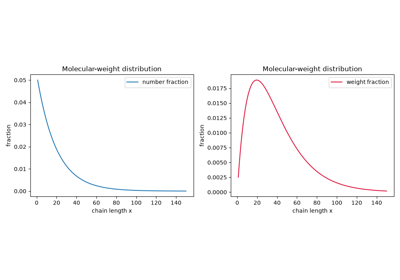
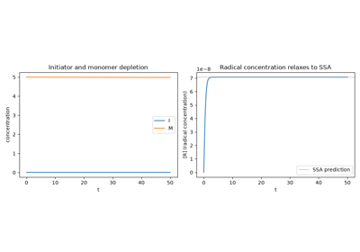
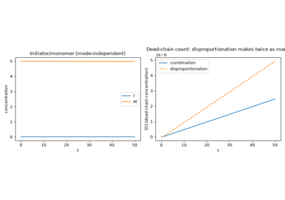
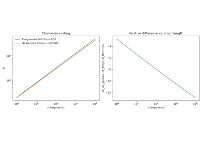

Breakthroughs in Polymer Chemistry#
“The most important result of this work… is the discovery that substances of colloidal properties may possess a definite molecular structure, and that the size of the molecule, in the true chemical sense, may reach or exceed that of the largest colloidal particle.” – Hermann Staudinger, Nobel Lecture, 1953
Polymer chemistry is the study of molecules built by linking small,
repeating units into chains that can run to hundreds of thousands of
atoms – long enough that a single molecule’s own statistics, not just
its chemical bonds, start to determine the material’s bulk properties.
For most of the nineteenth century and the first two decades of the
twentieth, rubber, cellulose, and proteins were widely believed to be
colloidal aggregates of small molecules, held together by some
ill-defined association force rather than ordinary covalent bonds; the
recognition that they are instead genuine, if enormous, single molecules
– and the working out of exactly how such a chain’s size, its
statistical distribution of lengths, and its reaction kinetics behave –
is one of twentieth-century chemistry’s most contested and consequential
stories. The systems in chemistrykit.polymer retrace that story,
from the first proposal that macromolecules are real, through the two
distinct polymerization mechanisms (step-growth and chain-growth) and
the chain statistics that describe a polymer’s size and shape in
solution. This chronology traces the major conceptual breakthroughs
behind the package, with a pointer to the corresponding implementation
at each stop.
1920 – Staudinger’s Macromolecular Hypothesis#
In a 1920 paper, Hermann Staudinger proposed that rubber, cellulose, starch, and proteins are not colloidal aggregates of small molecules held together by some weak, ill-defined association force – the prevailing view among organic chemists of the day – but are instead genuine single molecules, thousands of atoms long, joined end to end by ordinary covalent bonds like any other molecule, merely very large ones (“macromolecules,” a term Staudinger himself coined). The hypothesis was met with open hostility from much of the chemistry establishment; senior colleagues reportedly urged Staudinger to abandon the idea before it damaged his career, and one is said to have compared it to claiming an elephant could be found wandering the streets of Zurich. Staudinger spent the following decade and a half accumulating evidence – viscosity measurements, chemical-degradation studies, and eventually X-ray diffraction of stretched cellulose and rubber showing regular, molecular-scale repeat spacing – before the macromolecular picture was generally accepted. He was awarded the 1953 Nobel Prize in Chemistry “for his discoveries in the field of macromolecular chemistry.”
Connection: every model in chemistrykit.polymer presupposes
Staudinger’s hypothesis as settled fact rather than a live controversy –
a polymer chain’s end-to-end distance
(chemistrykit.polymer.systems.chain_statistics), the closed-form
distribution of chain lengths produced by a polymerization
(molecular_weight_distribution), and
the degree of polymerization reached by a given reaction mechanism
(step_growth,
chain_growth) are all quantities
that only make sense once a polymer is understood to be one long, real,
covalently bonded molecule of a definite length, not a colloidal
aggregate with no molecular identity of its own.
References: H. Staudinger, “Ueber Polymerisation,” Ber. Dtsch. Chem. Ges. 53 (1920), 1073-1085; “The Nobel Prize in Chemistry 1953,” NobelPrize.org.
1929 – 1936 – Carothers, Nylon, and the Carothers Equation#
Wallace Carothers, leading a small fundamental-research group at DuPont that his employer hoped would generate patentable discoveries almost as an afterthought, set out from 1928 onward to test Staudinger’s macromolecular hypothesis directly, by deliberately synthesizing long chains through simple, well-understood condensation reactions (an alcohol and an acid forming an ester and releasing water, repeated at both ends of a growing chain) rather than merely characterizing chains that occurred naturally. His group’s systematic study of these step-growth (“condensation”) polymerizations, beginning with a foundational 1929 paper laying out the general theory of how such reactions build up chain length, led directly to the synthesis of the first nylon fiber (nylon 6,6) in February 1935 – a fully synthetic replacement for silk that DuPont announced to the public in 1938 and brought to market as nylon stockings in 1940, arguably the first synthetic polymer to become an immediate and famous consumer product.
Carothers’s systematic study of these reactions produced a foundational quantitative result now called the Carothers equation: since any two molecules with compatible functional groups – monomers, dimers, or chains of any length – can react with each other in an ideal step-growth polymerization, the number-average degree of polymerization depends only on the extent of reaction \(p\) (the fraction of functional groups that have reacted), not on how long the reaction has run in absolute time:
This relationship diverges only as \(p\to1\), meaning a useful molecular weight requires driving the reaction to very high (often >99%) conversion – a demanding practical requirement that shaped how step-growth polymers are manufactured industrially ever since, and a sharp qualitative contrast with the free-radical chain-growth mechanism below, where high molecular weight appears essentially immediately, even at low overall monomer conversion.
Implementation:
degree_of_polymerization()
implements exactly the Carothers equation, with
extent_of_reaction_for_DP()
inverting it to find the conversion needed for a target chain length, and
degree_of_polymerization_stoichiometric_imbalance()
generalizing it to the case of a stoichiometric imbalance between the two
functional groups (or a deliberately added monofunctional “chain
stopper”), which caps the attainable degree of polymerization even at
complete conversion of the limiting group.
References: W. H. Carothers, “Studies on Polymerization and Ring Formation. I. An Introduction to the General Theory of Condensation Polymers,” J. Am. Chem. Soc. 51 (1929), 2548-2559; W. H. Carothers, “Polymers and Polyfunctionality,” Trans. Faraday Soc. 32 (1936), 39-49 (the paper the Carothers equation itself is usually cited to).
1934 – Kuhn’s Random-Walk Model of the Polymer Chain#
Werner Kuhn showed that a flexible polymer chain, free to rotate about each of its backbone bonds and ignoring for the moment the fact that it cannot pass through itself, behaves statistically exactly like a random walk of \(n\) freely jointed segments (“Kuhn segments”) of length \(b\) – a chain’s real, chemically detailed local structure can be coarse-grained into an effective segment length and count, chosen so the coarse-grained random walk reproduces the real chain’s overall size. Applying the central limit theorem to this random walk gives, exactly (no approximation beyond the random-walk idealization itself),
for the mean-square end-to-end distance – linear in the number of segments, the same \(\sqrt{n}\) scaling of end-to-end distance with chain length that a random walk in any other physical context obeys. This ideal-chain result, and the associated random-walk machinery Kuhn introduced to derive it, became the reference point every more realistic chain model (accounting for excluded volume, solvent quality, or chain stiffness) is compared against, exactly the role the free particle plays in quantum mechanics or the ideal gas in thermodynamics.
Implementation:
chemistrykit.polymer.systems.chain_statistics.IdealChain
implements exactly this exact random-walk result,
\(\langle R^2\rangle = nb^2\) and
\(\langle R_g^2\rangle = nb^2/6\) for the mean-square radius of
gyration, via the shared
PolymerChainModel
interface that
RealChain (see
1953, below) also implements, so the two can be compared side by side at
the same chain length and segment size.
References: W. Kuhn, “Ueber die Gestalt fadenfoermiger Molekuele in Loesungen,” Kolloid-Zeitschrift 68 (1934), 2-15 (exact page range as commonly cited in secondary literature; not independently re-verified against the original volume).
Ideal vs. real chain-size scaling
1936 – Flory and the Molecular-Weight Distribution of Step-Growth Polymers#
Paul Flory recognized that Carothers’s equation, though correct, gives only the average chain length reached at a given extent of reaction – a real step-growth polymerization produces a whole distribution of chain lengths, some far shorter and some far longer than the average, and knowing that distribution’s shape matters for essentially every physical property of the resulting material. Using elementary probability (each additional repeat unit in a chain is one more condensation step that did, or did not, occur), Flory derived the exact closed-form chain-length distribution for an ideal linear step-growth polymerization: the probability that a randomly chosen chain has exactly \(x\) repeat units follows a geometric distribution, \(N_x=(1-p)p^{x-1}\), often called the “most probable” distribution and, because the closely related distribution G. V. Schulz derived shortly afterward for chain-growth systems shares the same functional form, frequently referred to jointly as the Flory-Schulz distribution. Its number- and weight-average degrees of polymerization,
reproduce the Carothers equation for \(\bar X_n\) and give a polydispersity index \(\bar X_w/\bar X_n=1+p\), which approaches – but, however far the reaction is driven, never exceeds – exactly 2 as \(p\to1\), one of the most quoted results in all of polymer chemistry.
Implementation:
flory_schulz_number_fraction()
and
flory_schulz_weight_fraction()
implement exactly this distribution;
flory_schulz_number_average_DP(),
flory_schulz_weight_average_DP(),
and
flory_schulz_pdi()
give its closed-form moments, cross-checked in
chemistrykit.polymer.tests.test_molecular_weight_distribution
against direct numerical summation of the distribution via the shared
chemistrykit.polymer.utils.moments.number_average /
weight_average helpers, which also compute number_average_molar_mass()
and weight_average_molar_mass()
directly from any measured (count, molar mass) distribution, Flory-Schulz
or otherwise.
References: P. J. Flory, “Molecular Size Distribution in Linear Condensation Polymers,” J. Am. Chem. Soc. 58 (1936), 1877-1885.

The Flory-Schulz molecular-weight distribution
1937 – Flory and the Steady-State Kinetics of Free-Radical Polymerization#
Free-radical (chain-growth) polymerization proceeds through three distinct elementary steps – initiation of a radical, propagation as that radical adds one monomer after another, and termination when two radical chains meet – and Paul Flory showed how to extract simple, testable closed-form rate laws from this three-step mechanism using the steady-state approximation: because termination is enormously faster than initiator decomposition, the total radical concentration relaxes to a slowly drifting quasi-equilibrium almost immediately, at which point setting the rate of radical production equal to the rate of radical consumption gives
Flory’s analysis produced the classic, experimentally distinctive signature of free-radical chain polymerization: the overall rate of polymerization scales as the square root of initiator concentration (rather than linearly, as a naive mass-action guess might suggest), and he introduced the kinetic chain length \(\nu\) – the number of monomer units added, on average, per radical chain generated – directly relating the kinetics to the resulting polymer’s degree of polymerization.
Implementation:
free_radical_network()
builds the full initiation/propagation/termination mechanism as a
chemistrykit.kinetics.systems.networks.StoichiometricNetwork and
integrates it numerically (reusing the kinetics domain’s general
mass-action reaction-network engine rather than hand-rolling new ODE
machinery);
steady_state_radical_concentration()
implements exactly Flory’s closed-form \([M^\bullet]_{ss}\), used as
a direct cross-check against the numerically integrated network in
chemistrykit.polymer.tests.test_chain_growth;
steady_state_rate_of_polymerization()
and
kinetic_chain_length()
implement the resulting \(R_p\propto\sqrt{[I]}\) rate law and the
kinetic chain length itself.
References: P. J. Flory, “The Mechanism of Vinyl Polymerization,” J. Am. Chem. Soc. 59 (1937), 241-253.

Free-radical chain-growth polymerization kinetics
1941 – 1942 – Flory-Huggins Lattice Theory of Polymer Solutions#
Paul Flory and Maurice Huggins, working independently, applied a simple lattice model – imagining the solvent and polymer segments as occupying sites on a regular lattice, with the polymer’s segments constrained to occupy a connected sequence of neighboring sites – to derive the first successful statistical-thermodynamic theory of polymer solutions, giving a closed-form free energy of mixing in terms of the polymer’s degree of polymerization and a single dimensionless interaction parameter, conventionally written \(\chi\), that captures the net energetic preference between polymer-solvent and polymer-polymer (or solvent-solvent) contacts. This single parameter gives, for the first time, a quantitative meaning to what “solvent quality” means physically: a small or negative \(\chi\) (polymer-solvent contacts favored, or at least not disfavored) corresponds to a good solvent that swells the chain; a large positive \(\chi\) (polymer-polymer contacts favored) corresponds to a poor solvent that collapses it; and the special crossover value at which the two effects exactly balance defines the theta condition – the solvent quality at which a real chain’s excluded volume is effectively cancelled out and it behaves, to leading order, exactly like Kuhn’s ideal random walk above.
Connection: chemistrykit.polymer.systems.chain_statistics uses
Flory and Huggins’s theta/good/poor solvent-quality vocabulary directly
(chemistrykit.polymer.systems.chain_statistics.FLORY_EXPONENTS,
flory_exponent()),
but works at the level of the resulting Flory exponent
\(\nu\) for chain-size scaling rather than implementing the
underlying lattice free energy or the \(\chi\) parameter itself,
which this package does not model directly.
References: P. J. Flory, “Thermodynamics of High Polymer Solutions,” J. Chem. Phys. 9 (1941), 660; M. L. Huggins, “Solutions of Long Chain Compounds,” J. Chem. Phys. 9 (1941), 440; M. L. Huggins, “Theory of Solutions of High Polymers,” J. Am. Chem. Soc. 64 (1942), 1712-1719.
Ideal vs. real chain-size scaling
1944 – Debye’s Light-Scattering Measurement of Weight-Average Molar Mass#
Peter Debye showed that the intensity of light scattered by a dilute polymer solution, extrapolated to zero scattering angle and zero concentration, gives a direct absolute measurement of the polymer’s molar mass – and, crucially, gives specifically the weight-average molar mass \(M_w\), since larger molecules scatter light in proportion to the square of their mass while contributing to a concentration-based average only in proportion to the mass itself. This mattered because the classical methods already in use (osmotic pressure, end-group titration) instead measure the number-average molar mass \(M_n\), since they count molecules rather than weighing scattered light – so the two families of technique are not interchangeable measurements of “the” molecular weight, but genuinely different moments of the same underlying distribution, and comparing them (via the polydispersity index \(M_w/M_n\)) became, for the first time, a practical experimental measurement rather than a purely theoretical distinction.
Implementation:
weight_average_molar_mass()
implements exactly the moment light scattering measures,
\(M_w=\sum N_iM_i^2/\sum N_iM_i\), via the shared
chemistrykit.polymer.utils.moments.weight_average() helper;
number_average_molar_mass()
implements the complementary \(M_n\) an osmometry- or
end-group-based measurement would instead give, and
polydispersity_index()
computes their ratio.
References: P. Debye, “Light Scattering in Solutions,” J. Appl. Phys. 15 (1944), 338-342.
The Flory-Schulz molecular-weight distribution
1953 – 1963 – Ziegler, Natta, and Coordination (Insertion) Polymerization#
Karl Ziegler, investigating why an aluminum-alkyl-catalyzed ethylene oligomerization kept unexpectedly stalling at short chain lengths in the presence of trace nickel contamination, traced the effect to specific transition-metal impurities and, by 1953, had turned that accidental observation into something far more consequential: a titanium-tetrachloride/aluminum-alkyl catalyst system that polymerizes ethylene at ordinary pressure and temperature into high-density, largely linear polyethylene – a sharp departure from the high-pressure, free-radical process (branched, lower-density polyethylene) that was until then the only way to make the polymer industrially. Giulio Natta, learning of Ziegler’s catalyst within the year, extended it to propylene and discovered something Ziegler’s own ethylene chemistry had no way to reveal, since ethylene has no stereocenter to control: the catalyst could place each propylene monomer into the growing chain with the same spatial orientation every time, producing “isotactic” polypropylene – every methyl side-group on the same side of the extended chain – a crystalline, mechanically useful stereoregular material, in sharp contrast to the irregular, low-melting atactic polypropylene a free-radical mechanism produces.
Mechanistically, both results share a common thread entirely different from the free-radical chain-growth mechanism above: the growing chain end stays coordinated to the transition-metal catalyst throughout, and each new monomer first coordinates to the metal alongside it before inserting into the metal-carbon bond – “coordination” or “insertion” polymerization – so the catalyst’s own geometry, not random radical collision, controls both the resulting polymer’s regularity (linear versus branched) and, for a prochiral monomer like propylene, its stereochemistry. Ziegler and Natta shared the 1963 Nobel Prize in Chemistry “for their discoveries in the field of the chemistry and technology of high polymers.”
Connection: chemistrykit.polymer models the free-radical
chain-growth mechanism only (see 1937, above) – coordination/insertion
polymerization’s controlling chemistry is the catalyst’s own coordination
geometry rather than a bulk-solution rate law of the kind
free_radical_network()
integrates, so it has no direct counterpart here – but the result
Ziegler-Natta catalysis is famous for, a narrow, controllable
molecular-weight distribution and a tunable microstructure, is exactly
the qualitative contrast the free-radical polydispersity index
flory_schulz_pdi()
(see 1936, above) and its ceiling of 2 makes vivid: a coordination
catalyst’s single, well-defined active site is what later single-site
catalysis (metallocenes, and Ziegler-Natta’s own more modern descendants)
exploits to push polydispersity well below what any random-termination
free-radical mechanism can reach.
References: K. Ziegler, E. Holzkamp, H. Breil, and H. Martin, “Das Mulheimer Normaldruck-Polyaethylen-Verfahren,” Angew. Chem. 67 (1955), 541-547; G. Natta, “Una nuova classe di polimeri di alfa-olefine aventi regolarita di struttura,” Chim. Ind. (Milan) 37 (1955), 927-936; “The Nobel Prize in Chemistry 1963,” NobelPrize.org.
Free-radical chain-growth polymerization kinetics
The Flory-Schulz molecular-weight distribution
1954 – Bevington, Melville, and Taylor: Combination vs. Disproportionation#
Free-radical chain termination can happen in either of two distinct ways: two growing radical chains can fuse directly into a single dead chain (“combination”), or one radical can abstract a hydrogen atom from the other, leaving two separate dead chains, one with a saturated and one with an unsaturated chain end (“disproportionation”) – and which mechanism dominates depends on the specific monomer and temperature. John Bevington, Harry Melville, and Reginald Taylor worked out how to distinguish the two experimentally, principally through end-group analysis (using radioactively labeled initiator to count how many initiator fragments end up per dead chain – one per chain for disproportionation, but only one for every two chains for combination) and through the resulting degree of polymerization’s relationship to the kinetic chain length \(\nu\) Flory had defined above: \(\bar X_n=2\nu\) if termination is by combination (each dead chain carries two radicals’ worth of added monomer), but \(\bar X_n=\nu\) if by disproportionation (each dead chain carries only one radical’s worth).
Implementation:
free_radical_network()’s
mode parameter selects between exactly these two termination
stoichiometries – one dead chain per termination event for
mode="combination", two for mode="disproportionation" – while
leaving the initiator, monomer, and radical dynamics themselves
identical between the two (only the bookkeeping of how many dead chains
result from a given number of termination events differs), directly
reproducing the factor-of-two relationship between \(\bar X_n\) and
\(\nu\) Bevington, Melville, and Taylor’s analysis predicts.
References: J. C. Bevington, H. W. Melville, and R. P. Taylor, “The Termination Reaction in Radical Polymerizations,” J. Polym. Sci. 12 (1954), 449-459, and its sequel in the same volume (exact page ranges as commonly cited in secondary literature; not independently re-verified against the original volume).

Combination vs. disproportionation termination
1953 – 1974 – Flory’s Statistical Thermodynamics of Chain Conformations#
Paul Flory’s 1953 textbook Principles of Polymer Chemistry synthesized two decades of his own and others’ work – step-growth kinetics, the Flory-Schulz distribution, Flory-Huggins solution theory, and chain statistics – into the field’s foundational reference, and included his own mean-field argument for how a real chain’s size scales with the number of segments once excluded volume (the fact that two segments cannot occupy the same space) is accounted for: rather than the ideal chain’s exact \(R\sim n^{1/2}\), a real chain in a good solvent swells to \(R\sim bn^\nu\) with a solvent-quality-dependent exponent \(\nu\), which Flory’s mean-field balance of the entropic cost of stretching a chain against the energetic cost of excluded-volume overlaps estimated at exactly \(\nu=3/5\) in three dimensions – a poor solvent instead collapses the chain to a dense globule of essentially constant density, \(\nu=1/3\), and the theta solvent in between exactly recovers the ideal chain’s \(\nu=1/2\). Flory’s approximate mean-field derivation turned out to be remarkably close to the exact answer (see 1979, below), a fact appreciated only once renormalization-group methods became available decades later to check it. Flory’s cumulative body of work on the statistical thermodynamics of macromolecules earned him the 1974 Nobel Prize in Chemistry, “for his fundamental achievements, both theoretical and experimental, in the physical chemistry of the macromolecules.”
Implementation:
chemistrykit.polymer.systems.chain_statistics.RealChain
implements exactly this scaling law, \(R=bn^\nu\), with
theta_solvent(),
good_solvent(),
and
poor_solvent()
building it with exactly Flory’s \(\nu=1/2,\,3/5,\,1/3\)
(chemistrykit.polymer.systems.chain_statistics.FLORY_EXPONENTS);
at the theta point it reduces exactly to
IdealChain’s
end-to-end distance, though (as the module’s own docstring flags
explicitly) its radius-of-gyration prefactor is carried over from the
exact ideal-chain result as a scaling-law approximation rather than an
exact result for a real, self-avoiding chain.
References: P. J. Flory, Principles of Polymer Chemistry (Ithaca, NY: Cornell University Press, 1953); “The Nobel Prize in Chemistry 1974,” NobelPrize.org.
Ideal vs. real chain-size scaling
1979 – de Gennes and the Renormalization-Group Refinement of the Flory Exponent#
Pierre-Gilles de Gennes showed, beginning with a 1972 paper mapping the self-avoiding-walk problem onto the \(n\to0\) limit of an \(n\)-component magnetic spin model, that the full machinery of critical-phenomena renormalization-group theory – developed to compute precise, universal exponents for phase transitions – could be carried over essentially unchanged to compute the Flory exponent \(\nu\) exactly, rather than by Flory’s original mean-field estimate. The resulting best modern value, \(\nu\approx0.588\) in three dimensions (refined through the 1970s by de Gennes and, independently, precise renormalization-group calculations from Jean Zinn-Justin and collaborators), is remarkably close to – but not exactly equal to – Flory’s original \(\nu=3/5=0.6\), an accuracy his simple mean-field argument had no obvious right to. De Gennes synthesized this and the broader analogy between polymer statistics and critical phenomena in his 1979 book Scaling Concepts in Polymer Physics, and was awarded the 1991 Nobel Prize in Physics “for discovering that methods developed for studying order phenomena in simple systems can be generalized to more complex forms of matter, in particular to liquid crystals and polymers.”
Connection:
RealChain’s
default good-solvent exponent
(good_solvent(),
\(\nu=3/5\), from FLORY_EXPONENTS) is Flory’s original classic
value; the more precise renormalization-group estimate above is
available separately via
good_solvent_renormalization_group()
(FLORY_EXPONENT_GOOD_SOLVENT_RENORMALIZATION_GROUP,
\(\nu\approx0.588\)) for direct comparison. The two exponents
differ by only about 2% – small enough that
chemistrykit.polymer.systems.chain_statistics’s qualitative point (a
good solvent swells a chain measurably beyond the ideal, theta-solvent
scaling) is unaffected by which value is used – but because chain size
is a power of n, that 2% exponent gap compounds with chain length: the
two models’ predicted sizes diverge further apart the longer the chain,
as the gallery example below shows directly.
References: P.-G. de Gennes, “Exponents for the Excluded Volume Problem as Derived by the Wilson Method,” Phys. Lett. A 38 (1972), 339-340; P.-G. de Gennes, Scaling Concepts in Polymer Physics (Ithaca, NY: Cornell University Press, 1979); “The Nobel Prize in Physics 1991,” NobelPrize.org.

Flory’s mean-field exponent vs. the renormalization-group value